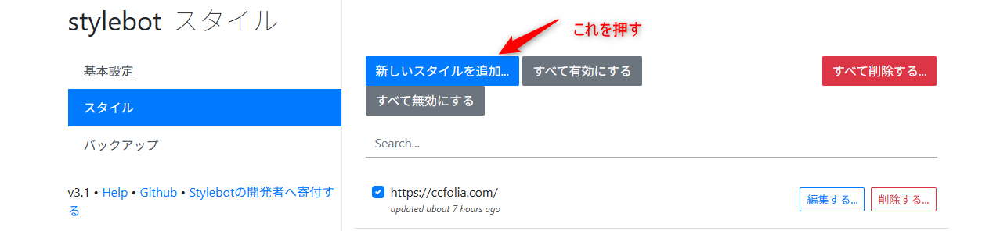
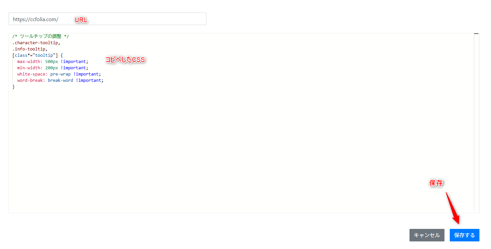

このCSSを適用すると、キャラクターのコマにカーソルを乗せたときの吹き出し（ツールチップ）の横幅が変わるようになる。
デフォルトだと幅が狭くてテキストが細切れに折り返されるけど、このCSSで最大500pxまで広げられる。個人的にはこのくらいが見やすいと思うけど、数字の調整もできる。
Stylebotは Chrome拡張機能（ブラウザに追加するやつ）。Chromeウェブストアからインストールできる。chrome関係のブラウザだったら多分インストールできる
chrome://extensions/ と入力 → Stylebotの「詳細」または「オプション」をクリック、拡張機能自体の詳細になるなら項目の中に拡張機能のオプションがまたあったりするかも？

https://ccfolia.com/ と入力。下の大きいテキスト欄に、CSSをコピペする。